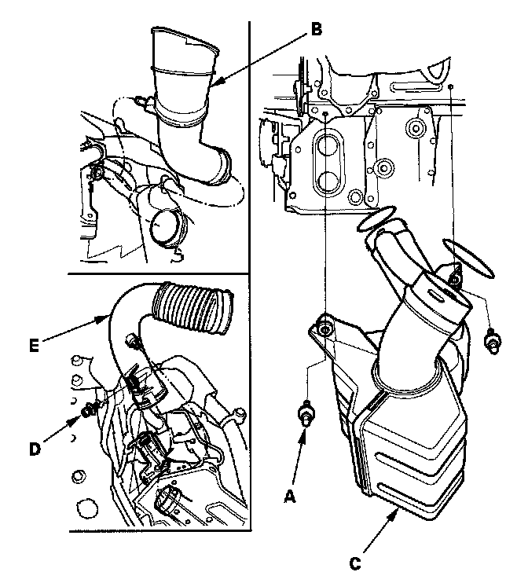

Resonator: Service and Repair
Resonator Removal/Installation1. Make sure you have the anti-theft code for the audio system and the navigation system (if equipped).
2. Remove the front bumper.

3. Remove the bolts (A), and pipe (B).
4. Remove the resonator (C).
5. Remove the battery.
6. Remove the bolt (D), and duct (E).
7. Install the parts in the reverse order of removal.
8. Reinstall the battery, and do these items:
- Enter the anti-theft code for the audio system and the navigation system (if equipped).
- Set the clock (if needed).